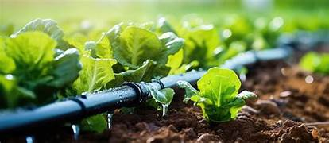
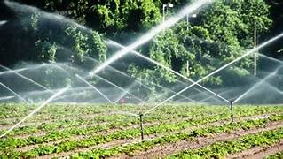
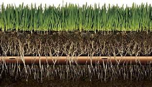
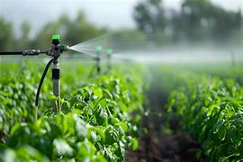
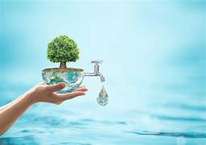
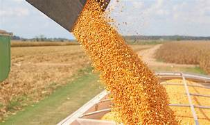
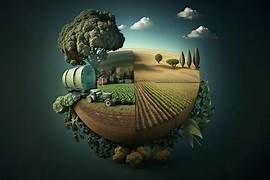
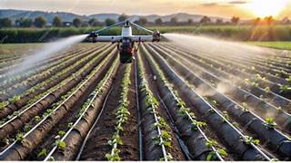
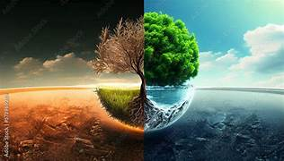

Modern irrigation systems are advanced methods of supplying water to crops in a controlled way. Unlike traditional methods that waste water, modern systems focus on saving water, improving efficiency, and increasing crop yield.




Modern irrigation plays a crucial role in sustainable agriculture by conserving water, improving crop yields, and supporting farmers in adapting to climate change.





By adopting modern irrigation systems, farmers can ensure better productivity, conserve water, and promote sustainable agriculture for future generations 🌱💧.